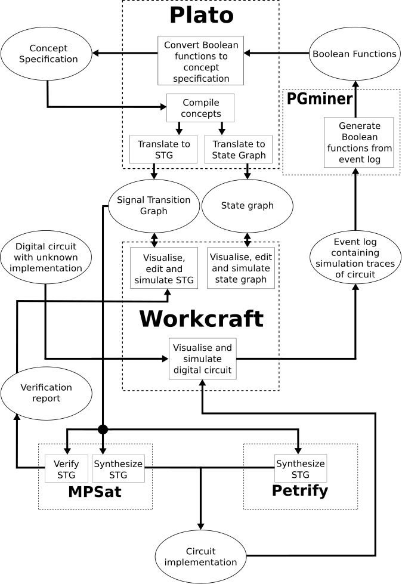

Table of Contents
This page is created to include plato page in help namespace for automated export of documentation.
Plato toolsuite
Plato is an open-source tool, embedding the domain-specific language of Asynchronous Concepts. This also provides tools to automatically generate Asynchronous Concept specifications and translate an Asynchronous Concept specification to other modelling formalisms which can be used with Workcraft and other backend tools. This provides a design flow for asynchronous control circuits using Asynchronous Concepts, all of which can be performed within Workcraft.
This page will provide information on how Plato, and the Asynchronous Concepts design flow can be used within Workcraft. Further information on how Plato works can be found at https://github.com/tuura/plato. Information on the language of Asynchronous Concepts can be found at https://jrbeaumont.github.io/concepts-blog/. A diagram of how all tools mentioned on this page interact can be found here
Writing Asynchronous Concepts
Asynchronous Concepts can be written from within either the Signal Transition Graph or Finite State Transducer plugins of Workcraft. From both plugins, the writing dialog can be accessed from with menu option Conversion→Translate Concepts….
This dialog provides a template for a new specification to be written, or existing specifications can be opened and edited within this dialog. A specification can also be saved for future use.
This dialogue also provides the option for including other Asynchronous Concept specifications in a translation. If a specification imports one or more concepts from other specification files, these must be pointed to in order for the translation to use them. The files to be used can be specified with the Includes button.
Translate will then pass the specification to Plato, as well as the included files. This will translate the given specification to the modelling formalism from which Plato was called, either Signal Transition Graph (STG), or Finite State Transducer (FST).
Generating Asynchronous Concept specifications
In some cases, an existing circuit may want to be included as part of a new specification. Rather than manually derive a specification for this, some tools can be used to generate these. This uses Boolean functions which represent the circuit to produce the Asynchronous Concepts. However, the Boolean functions of a circuit may not always be known. Whether known or not, we provide a method of generating a concept specification.
Known circuit implementation
If the implementation of a circuit is known, then this can be represented by a Boolean function. Plato includes a feature called Bool-to-Concept, which takes Boolean functions and produces an Asynchronous Concept specification. This takes at least one function, the set function, which indicates the states of the input signals required for an output signal to transition high. The reset function may also be included, indicating the states of the input signals which causes the output signal to transition low.
When provided with either the set function alone, or both the set and reset functions, Bool-to-Concept will then generate an Asynchronous Concept specification, which can then be saved for editing or translation, or to be imported by another concept specification to be used in the translation of this.
Unknown circuit implementation
If the circuit is a black-box, i.e. the implementation is not known, but the input and output signals can be observed, then this circuit can be simulated. Simulating this multiple times, with different combinations of input signal transitions that cause a change to the output signal transitions, and recording each separate simulation trace forms a simulation log. Traces should be separated by the output transition rising, and falling. This can then be used to produce a Boolean function using the tool PGminer, also a backend tool included with Workcraft.
PGminer will mine the given simulation log, finding concurrency and removing redundancies, and produce Boolean functions, one for the rising output transition and one for the falling output transition. These Boolean functions can then be passed into the Bool-to-Concept feature of Plato, and be used to generate a concept specification as discussed in the previous section
Note
Some assumptions are made with automatically generated specifications. The initial states of all signals are all automatically set to low and all variables in the given Boolean functions are set as inputs. This is because the initial states and interface of each signal cannot be determined from the Boolean function alone. In the future, this may be able to be set from within Workcraft, but currently, the specification can be edited to change these by the user, such as setting a signal as an internal signal, or changing one or more signals initial states to high.
Translated Finite State Transducer
When translating an Asynchronous Concept specification from within the FST plugin, the automatically translated FST will be imported directly into the FST plugin. A translated FST is the state graph representation of the given Asynchronous Concept specification. This formalism can be useful to identify the intricacies of the translated specification, and can be useful for simulation of a system, ensuring that the system works as expected. However, an FST can not be used for further operations.
Translated Signal Transition Graph
When translating an Asynchronous Concept specification from within the STG plugin, the automatically translated STG will be imported directly into the STG plugin. This will be the STG representation of the given Asynchronous Concept Specification.
This STG can then be simulated, so that it's operation can be checked to ensure it works as expected. The STG plugin has a built-in simulation tool, allowing the user to view the operation of the STG as it runs, and manually select the signal transitions that can occur.
Following this, the STG can then be verified. STGs feature a long history of theory, and several tools with long development histories which can be used to automatically verify an STG. Workcraft can automatically pass an STG into the backend tool MPSat, which will automatically verify the given STG, reporting back to the user whether this was successful or, if not, providing information of the failure.
If at any stage an error is found, either the STG can be edited to fix this error, or the Asynchronous Concept specification can be edited and then re-translated, producing a new STG which can then be simulated and verified one again.
When an STG has been verified, this proves that the STG can be implemented. Several tools can also automatically synthesize an STG, providing Boolean functions representing the STG which are then used to produce a circuit implementation. Tools such as MPSat and Petrify can synthesize an STG automatically. The Boolean functions will be used by Workcraft to produce a digital circuit, opened in the Digital Circuit plugin.
Plato Interoperability
